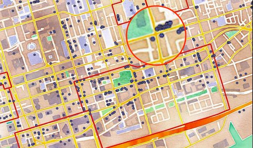
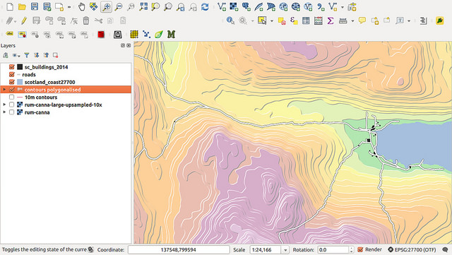
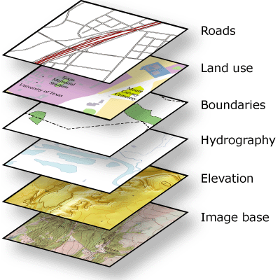

Quantum GIS
Data cleaning/publishing Workshop
9th November 2015
André Heughebaert
Belgian Biodiversity Platform
Summary
Georeferencing
To georeference means to associate something with locations in physical space.
The term is commonly used in the geographic information systems field to describe the process of associating a physical map or raster image of a map with spatial locations. Georeferencing may be applied to any kind of object or structure that can be related to a geographical location, such as points of interest, roads, places, bridges, or buildings.
Hackeloeer, A.; Klasing, K.; Krisp, J.M.; Meng, L. (2014).
"Georeferencing: a review of methods and applications". Annals of GIS 20 (1): 61–69.
Georeferencing

Locations
Guinée équatoriale (Rio Muni), parc national de Monte Alen,dalle rocheuse d'Engong, 5 km à l'ouest du Village d'Engong.
SE du Parc National de Monte Alén, près du transect Ecofac de Nkumékié, à 5300m du début du layon.
Inselberg Dumu
Coordinates
N01°37,464' E10°17,943'
164671 N 646197 E
1,36935 N 11,3223 E
Geodetic Datum/ Coordinate System
WGS 84 World Geodetic System
ED50 European Datum 1950
SAD69 South American Datum 1969
GRS 80 Geodetic Reference System 1980
NAD83 North American Datum 1983
WGS84 World Geodetic System 1984
NAVD88 N. American Vertical Datum 1988
ETRS89 European Terrestrial ReferenceSystem 1989
GCJ-02 Chinese encrypted datum 2002
Spatial Reference System Identifier (SRID)
Universal Transverse Mercator (UTM)
Gazetteers
“Gazetteer is a geographical dictionary that helps you to convert locations into coordinates.”
The GeoNames geographical database covers all countries and contains over eight million placenames that are available for download free of charge.

Visualising
QGIS a Free and Open Source Geographic Information System
Visualising - Layers

Visualising - Layers
- Different types of layers:
- Vector (points, lines, polygones...)
- Raster (pixels image)
- WMS (Web Map Service)
- CSV (text date file with latitude/longitude)
- GIS Database (points, lines, polygones...)
Enhancing/Cleaning data
- Locations → coordinates
- Coordinates → Locality, Province, Country
- Coordinates swap (lat ↔ long)
- Coordinates sign (N ↔ S and E ↔ W)
- Coordinates uncertainty
- Find/remove/fix outliers
Demo
- Geonames gazetteer
- QGIS Basic
- Adding layers
- Playing with layers
- Changing properties
- Data entry
- Scratch layer
- CSV layer
- Database layer
- RBINS collections
- BRLU herbarium
Hands-on
Tools you need:
Questions?

Made with reveal.js - HTML Presentations made easy